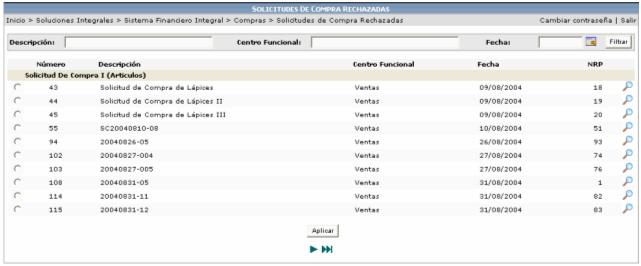
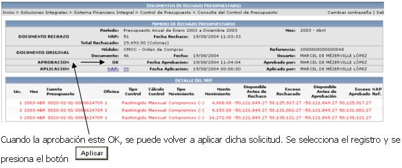

La información que se visualiza en esta pantalla son aquellas solicitudes que fueron rechazadas por presupuesto únicamente. Se debe de utilizar esta opción cuando una solicitud ha sido rechazada, para poder reintentar la aplicación de la solicitud de compra. El proceso de aplicación, podría recibir un nuevo rechazo o puede ser aceptado definitivamente lo que implicaría que se realice el proceso normal de una solicitud de compra.

Al presionar este icono, el usuario puede ver el estado de dicha solicitud y el detalle que generó el NRP (número de rechazo presupuestario)
